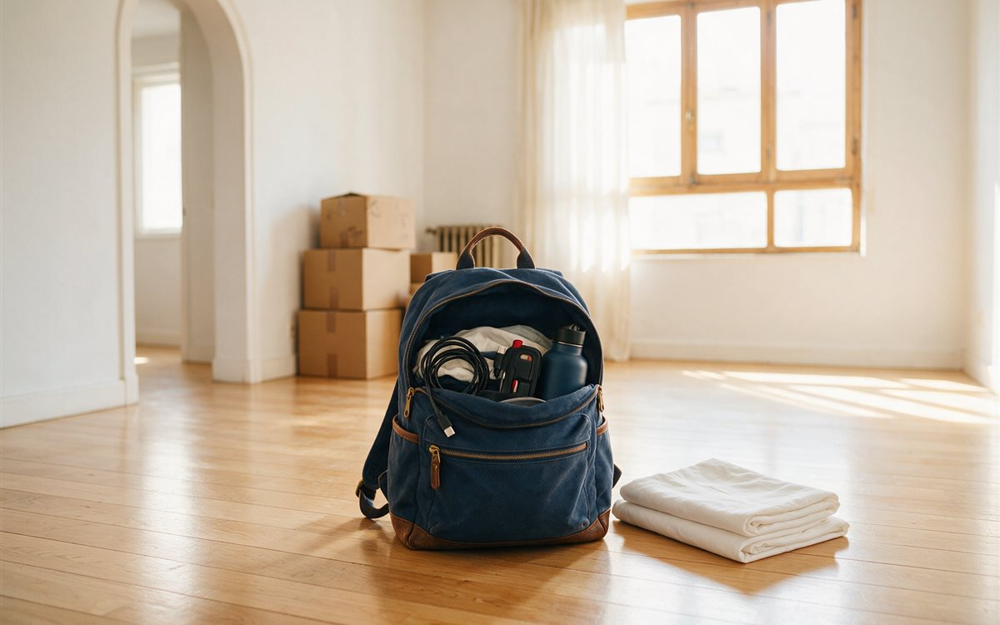

La mudanza casi nunca se tuerce el día D. Se tuerce tres semanas antes, cuando nadie avisó a internet, el presupuesto no decía qué incluía y las cajas siguen siendo una idea abstracta. Esta lista pone cada cosa en su semana para que el día de la mudanza solo te toque cargar.
💡 Lo primero siempre es saber la cifra con la que juegas. Con la calculadora de presupuesto de mudanza tienes un rango orientativo en un minuto. No es un precio real ni de ninguna empresa, pero te ahorra empezar a ciegas.
Semanas 8 a 6: cabeza fría
Aquí no se empaqueta nada. Se decide.
- Fija la fecha, o al menos una horquilla. Cuanta más flexibilidad tengas, más fácil será encajar a quien te haga la mudanza.
- Haz un inventario a ojo. Habitación por habitación, con lo que se queda, lo que se va y lo que se regala. Lo que no cargas, no lo mueves.
- Mira los accesos de las dos casas. Ascensor, escaleras, ancho del rellano y si un camión llega hasta el portal. Es de lo que más se subestima y de lo que más cambia el día.
- Pregunta si necesitas reservar sitio para el camión. En algunas calles se puede, en otras no; consúltalo en tu ayuntamiento.
- Lanza la calculadora con origen, destino y tipo de vivienda para tener un primer rango.
Semanas 5 a 3: contrata y avisa
Es el momento de pedir presupuestos, y de que todos hablen de lo mismo. Pásales el mismo inventario y pregunta qué incluye cada uno: embalaje, desmontaje, montaje, seguro, plantas sin ascensor. Un presupuesto que no lo aclara casi siempre acaba en un «eso es aparte».
También toca avisar. La lista típica:
- Suministros: luz, agua, gas e internet. La fibra a veces tarda en instalarse, así que no lo dejes para el final.
- Banco y seguros: cambio de domicilio y, si lo tienes, el seguro del hogar de la casa nueva.
- Trabajo, colegio y centro de salud.
- Correos: pregunta por el reenvío de correspondencia.
- Suscripciones y compras online con dirección de envío.
Semanas 2 y 1: cajas, desmontajes y confirmaciones
- Empieza por lo que no usas: temporada contraria, libros, decoración, trastero.
- Etiqueta por habitación y por prioridad. Una caja marcada «cocina, abrir primero» vale oro a las diez de la noche.
- Decide qué se desmonta antes y qué se desmonta el mismo día. Armarios grandes y camas son los habituales.
- Mide el sofá, la cama y el armario más grande y compáralos con puertas y rellanos de la casa nueva. Lo típico es que el problema aparezca justo ahí.
- Confirma por escrito fecha, hora, dirección y qué incluye el servicio.
Si quieres los errores que más encarecen una mudanza y un calendario de embalaje, los tienes en El sofá que no pasa por el rellano.
La semana de la mudanza
- Vacía y descongela la nevera con tiempo.
- Desconecta lavadora y otros electrodomésticos según sus instrucciones.
- Aparta documentos, joyas y llaves: no viajan en el camión.
- Haz fotos de los contadores y del estado de la casa antes de salir.
El día D: el kit del primer día
Prepara una bolsa que viaje contigo, no con los muebles:
- Documentación y cargadores.
- Medicación y aseo.
- Ropa para un par de días y un juego de sábanas.
- Herramientas básicas: destornillador, cinta, tijeras.
- Algo de comer y agua. Nadie quiere hacer la compra con el sofá en el rellano.

Preguntas que casi todo el mundo se hace
¿Con cuánta antelación hay que organizar una mudanza?
Ocho semanas da margen cómodo. Si vas justo, el orden sigue valiendo: primero fecha y presupuesto, luego avisos, luego cajas.
¿Puedo hacerlo todo yo?
Se puede, pero conviene decidir qué haces tú y qué dejas a profesionales. Suele compensar delegar lo que pesa o se rompe fácil.
¿Qué hago si me falta una semana y no ocho?
Empieza por la fecha, el inventario y los presupuestos, y avisa lo antes posible a los suministros e internet. El resto se comprime.
¿Cuánto me va a costar?
Depende de volumen, distancia y accesos. En la calculadora tienes un rango orientativo; recuerda que son estimaciones de nuestra calculadora, no precios reales.
Para cerrar
Una mudanza bien organizada se nota en que el día D es aburrido. Si además quieres entender por qué cada ruta cuesta lo que cuesta, echa un vistazo a Cruzar España con tu sofá a cuestas.